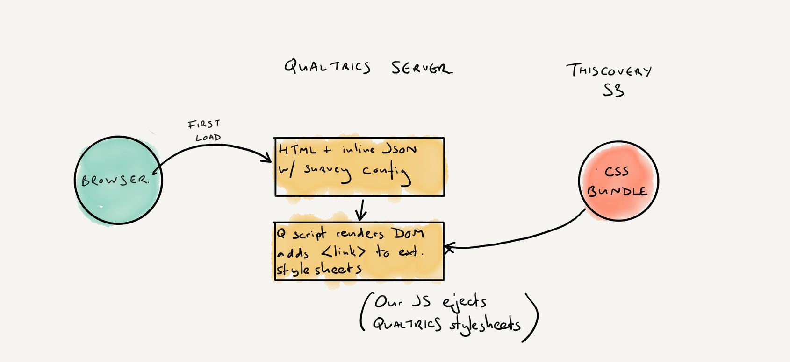
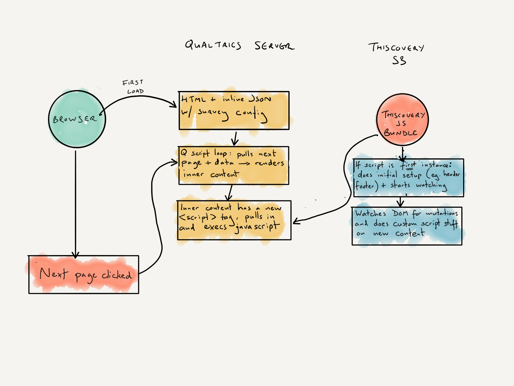

For development, we can use the skin files directly from the github repo (set up via GitHub pages to serve them):
https://this-institute.github.io/qualtrics-thiscovery-skin/dist/bundle.X.X.X.css OR .js
In production, skin files are hosted in a an S3 bucket, and URLs are like so:
https://thiscovery-skin.s3.eu-west-1.amazonaws.com/dist/bundle.X.X.X.css OR .js
The Qualtrics survey template is kept up-to-date with the latest rolled-out version (at Nov 2022, 2.1.0).
CSS Implementation
Thiscovery styling is inserted into a Qualtrics survey in the ‘Look and Feel’ menu. To do this:
-
Go to Look and Feel
-
Under Theme tab:
- select Blank
-
Under General tab:
- set “Next Button Text” to “Next”
- set “Previous Button Text” to “Previous”
- set "Progress Bar" to "None". NB Will change for 2.2.0 to restore progress bar
-
Under Style tab:
- set Primary and Secondary colour rto #DD0031 (not vital but will improve look if loading delayed)
- in ‘External CSS' put the URL to the latest CSS bundle version (of either dev/production, see above)
JS Implementation (For development)
JavaScript is set by including a <script> tag in the header of the survey.
- Go to Look and Feel
- Under General tab:
- click ‘Edit’ on the ‘Header’ section
- click the edit HTML icon
- make sure the code includes the following:
<script src="https://this-institute.github.io/qualtrics-thiscovery-skin/dist/bundle.X.X.X.js"></script>with the correct version number
Explainer
This is a quick explainer on how Qualtrics includes our Thiscovery JS and CSS bundles in its functionality.
CSS is pretty straightfoward. Qualtrics serves the browser an HTML document with a lot of JSON inline. Then the Qualtrics JS sets up the DOM, adding a <link> tag for our external stylesheet to the <head>.

Javascript is a bit more complicated. The Qualtrics JS renders a header to the page which contains the <script> tag we put there. However, on every user ‘next’ click, the Qualtrics JS does a ‘pseudo-reload’ where it pulls the next page data from its server, then ejects the previous page HTML and sets up a new clump of HTML in its place. Unfortunately that includes our script tag, which it adds to the DOM again, loading a new instance of our script.
This is not actually a deal-breaking problem, but it does preclude some updating across the ‘pseudo-loads' and cause repaint flashes where the setup repeats itself (eg. in header and footer). The way around that however (in version 2.2+), is that the first instance persists even though its tag is ejected, and the code is written so that it checks if it is the first instance when it runs, and if it isn’t, gives up.

Then the first instance uses a MutationObserver to watch for Qualtrics update, then makes its updates.